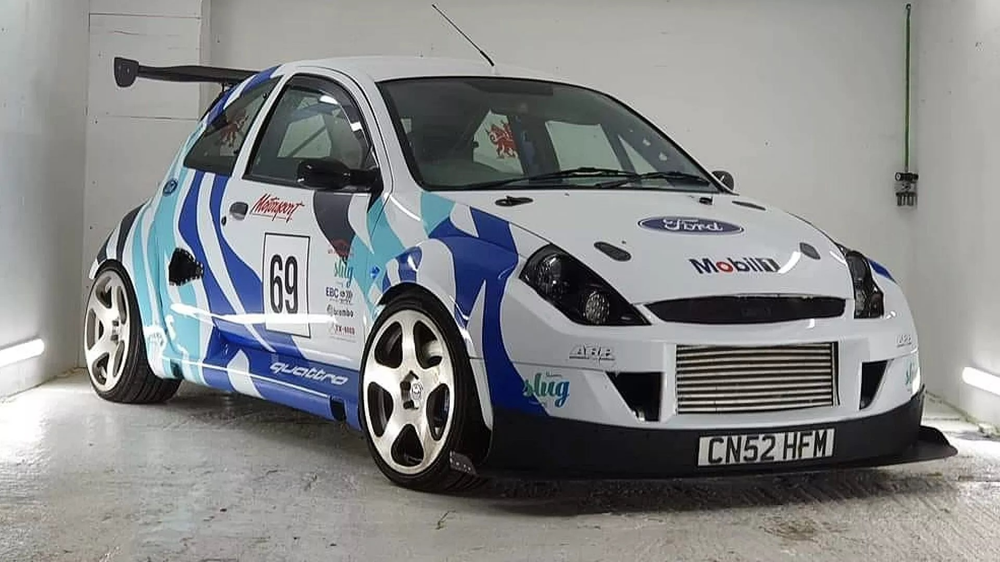
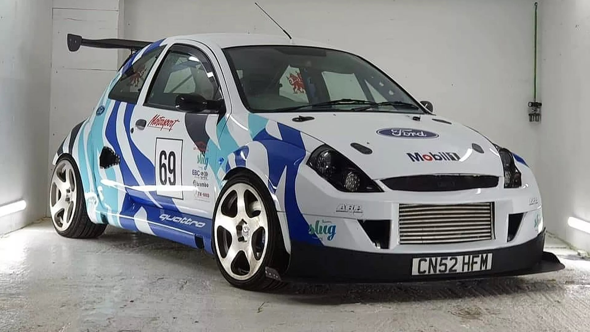
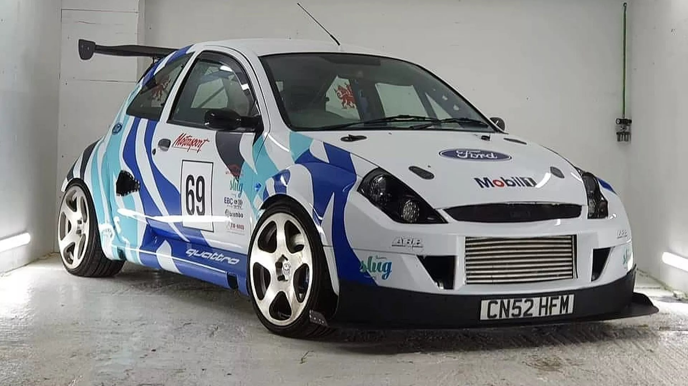
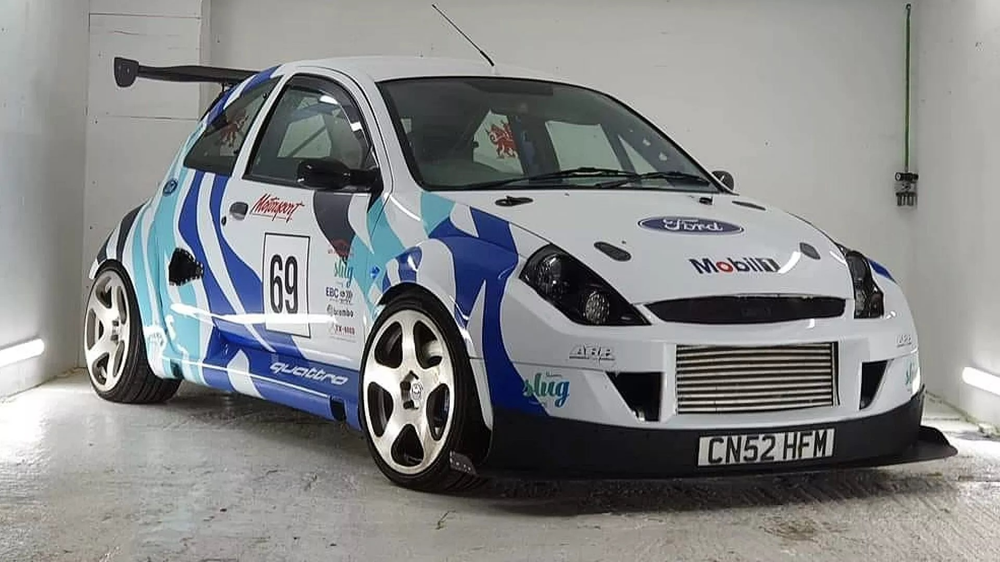

 

O Ford Ka "baratinha" (geralmente as versões 1.0 de entrada) é um carro compacto, econômico e ágil, ideal para a cidade, com direção elétrica, bom espaço interno para a categoria, especialmente nas gerações mais recentes (a partir de 2014), e motores eficientes, destacando-se pela manutenção acessível e popularidade entre frotistas e motoristas de aplicativo. As versões mais novas com motor 1.0 de três cilindros (Ti-VCT) oferecem ótimo desempenho e consumo, enquanto as mais antigas com motor Zetec Rocam são robustas, mas menos potentes e mais gastadoras.
Motorização: Principalmente 1.0 flex (com versões 1.6 também), com destaque para o moderno 1.0 de três cilindros nas últimas gerações.
Dirigibilidade: Direção elétrica (nas mais novas) torna o carro muito fácil de manobrar na cidade.
Consumo: É conhecido por ser econômico, principalmente nas versões 1.0.
Manutenção: Peças geralmente acessíveis e baixo custo de manutenção.
Espaço: As gerações mais recentes (a partir de 2014) ganharam bom espaço interno e porta-malas razoável (257L).
Ka Antigo (até 2008): Super compacto, design "bolinha", muito econômico, mas com menos espaço e potência.
Segunda Geração (2008-2013): Ganhou 4 portas, porta-malas maior (263L), motores 1.0 e 1.6 flex, mais espaçoso.
Terceira Geração (2014-2021): Inspirado no Fiesta, design mais moderno, motor 1.0 de 3 cilindros (Ti-VCT) mais eficiente, ganhando espaço e bons equipamentos, se tornando um dos mais vendidos.
O Ford Ka "baratinha" é um carro popular, confiável, econômico e com boa dirigibilidade urbana, sendo uma ótima opção para quem busca um veículo de entrada com manutenção simples e custo-benefício.